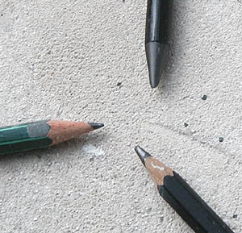
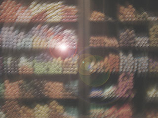
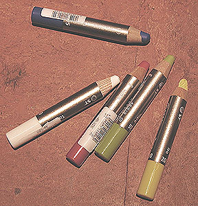

La pierre noire,
minéral naturel de composition chimique similaire à la mine de crayon actuelle
(donc chargée d'une quantité importante de silice), a probablement été utilisée
très antérieurement. On ne peut donc pas affirmer que le graphite était
intégralement un nouveau venu dans l'univers pictural.
Le graphite a cependant détrôné la mine de plomb
véritable et la pointe d'argent. Lire l'article du
glossaire consacré à la plombagine.
La mine de plomb était bien répandue depuis le XVème et le
demeura jusqu'au XIXème. Elle était constituée d'un alliage nocif d'étain
(1/3) et de plomb (2/3). Sa tendreté a fait son succès jusqu'à ce que le
graphite démontre les mêmes capacités. La "mine de plomb" contemporaine, actuellement
disponible dans le commerce (en haut sur la photo,
détails ici), de même que
la mine des crayons noirs, sont - heureusement - constituées de
graphite.
Utilisé pur aux premiers temps, le graphite était
très friable. C'est pour cette raison qu'il aurait été progressivement
renforcé par des bouts de bois dont la forme se perfectionna progressivement. C'est ainsi que le
crayon serait apparu et aurait évolué au fil des siècles comme nous le verrons
ci-dessous. Le bois de cèdre est réputé le meilleur
(information livrée sous réserve de confirmation).
L'usage artistique
La mine de plomb et la
pointe d'argent (largement utilisée par Raphaël, Vinci, Fouquet, Van Eyck,
Holbein ou Dürer) sont essentiellement dédiés à
l'esquisse. Le
crayon à son tour sera réputé utile en premier lieu pour ce type de travaux, bien que de très
grands maîtres comme Prud'hon ou Ingres réaliseront des chefs d'oeuvres d'une
grande complexité picturale (bien au-delà de l'esquisse) à
l'aide de cet outil très simple.
Les esquisses, croquis et dessins étaient
très souvent réalisés sur des
papiers de couleur et rehaussés de blanc. Encore aujourd'hui, le choix du papier
est indissociable à plusieurs titres de celui du crayon, on le verra ci-dessous.
Petit historique
En 1659, un premier "fabricant de crayons" apparaît dans les archives de
Nuremberg.
Kaspar Faber produit au milieu du XVIIIème siècle une
"gaine de bois" encore rudimentaire. En 1795, un mélange de graphite
et d'argile apparaît simultanément en Autriche (Hartmuth) et en France (Nicolas
Conté).
A ce moment, le procédé de fabrication est le suivant :
réduire le graphite en poudre et l'incorporer à de
l'argile, mettre le résultat du
mélange en forme de bâtonnets puis cuire à haute température.
Selon nos informations, aujourd'hui encore, les secrets de fabrication
résident principalement dans les
paliers de cuisson.
Lothar Faber crée, autour de 1839, les graduations de type H, 2H, 3H, etc.,
et HB, B, 2B, etc., en liaison directe avec la proportion d'argile : plus
celle-ci est importante, plus la mine porte du côté "H", devient
dure et est désignée comme "sèche" ou "maigre".
Cette
classification est conforme au concept du "gras" : l'argile est une charge (maigre), le graphite joue simultanément le rôle de liant
(gras) et
de pigment.
En principe, les crayons dits "gras" s'effacent plus aisément dans
la mesure où ils laissent moins
de marques, de rayures sur le papier. Ils sont cependant parfois assez tenaces
pour laisser des traces irréversibles. Le choix du papier doit tenir compte de
ces facteurs.
Le crayon sec ressemble très fortement à la pointe d'argent très utilisée
auparavant.
Un peu plus récemment, les fabricants ont adjoint de la cire au mélange
graphite+argile.
C'est le même Lothar Faber qui crée le crayon hexagonal. Il exploite déjà
des mines de graphite situées en Sibérie (Irkoutsk,1856). Il
impose sa marque sur chaque crayon et en normalise la taille : 17,5 cm (une
norme qui demeurera).
La "mine de plomb" contemporaine, en fait constituée de graphite, et la "mine
graphite" sont décrites ici.
Naissance
des différents crayons de couleurs
et destinée des graduations H et B

Autour de 1900 apparaît la fabrication en masse de crayons de couleur
(généralement à base de cires, d'huiles peu saturées
et de pigments, déclinés en un nombre vertigineux
de couleurs car
le mélange est malaisé). Parallèlement, les gammes de crayons au graphite s'étendent du 8B au 8H, graduation qui demeurera
référentielle. Progressivement, les "cires" solubles à l'eau
apparaissent et avec elles, les
crayons
aquarellables (voir photo ci-dessous : un exemple de crayons
aquarellables), dont on dissout le trait
d'un seul coup de pinceau, contrairement aux
sanguines classiques à la gomme
arabique qui nécessitent une préparation plus longue. Par la suite, aucune
invention majeure ne surviendra.
Le crayon-pastel (dit à tort crayon-fusain,
un autre produit) doit aussi être mentionné. Il ne s'agit, ni plus
ni moins, que d'un pastel sec très fin entouré de bois. Il apporte ce qui,
peut-être, manque aux "craies" de pastel : une précision disponible
instantanément, à l'aide d'un banal taille-crayons.
Mines
et porte-mines
La formule "crayon" n'a pas totalement détrôné la formule
"mine + porte-mine". Différents fabricants proposent ces deux
produits. L'utilisation du porte-mine remonterait à celle de la pointe
d'argent, c'est à dire qu'elle serait fort ancienne.
On ne parle pas ici de mines fines destinées à des travaux industriels
nécessitant de la précision, mais de cylindres plus épais, de quelques
millimètres de diamètre. La mine peut être taillée de différentes manières
(papier abrasif), notamment pour obtenir un méplat ou un tranchant, à l'instar
d'une "mine de plomb" ou "mine graphite" contemporaine. Voir graphite (outil).
Certains de ces porte-mines sont de beaux objets pouvant atteindre une valeur
financière appréciable de même qu'une valeur affective.
Non-identifié : le crayon carbone
Un intitulé aussi flou ne permet pas de le décrire. Il laisse une trace noire
mais il n'est pas documenté. On ne sait pas ce que c'est. Si : du carbone. Nous
voici bien avancés. Les fabricants gagneraient à en dire un peu plus.
Retour
début de page